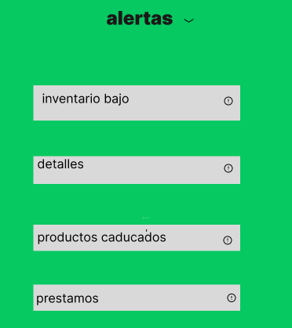

alertas: Las alertas sirven para notificar, advertir o informar a los usuarios sobre eventos importantes en una aplicación,
inventario bajo Notifica cuando el stock de un producto está por debajo del mínimo establecido. Ayuda a reabastecer productos a tiempo y evitar faltantes.
Detalles de Productos CaducadosInforma sobre productos cuya fecha de caducidad ha pasado o está por vencer. Evita vender productos vencidos y posibles problemas de salud o sanciones.
prestamosControla objetos o productos prestados dentro de una empresa o institución. Permite llevar un registro de quién tiene qué y cuándo debe devolverlo.
